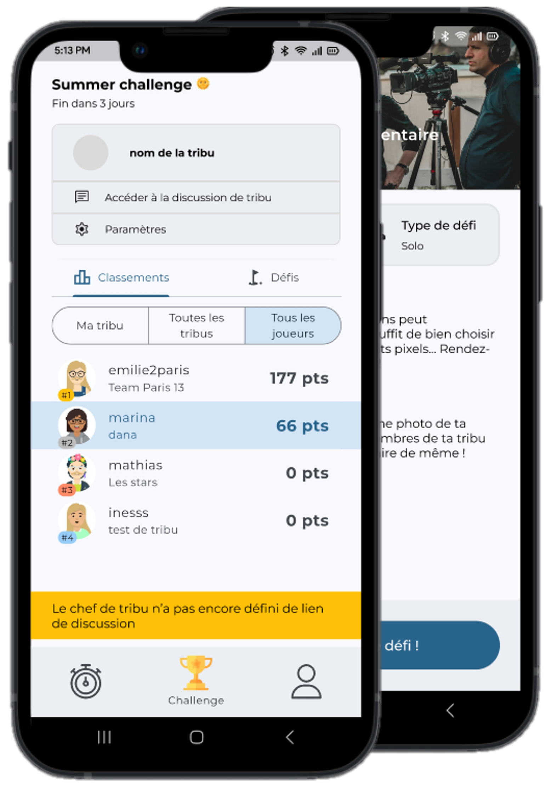
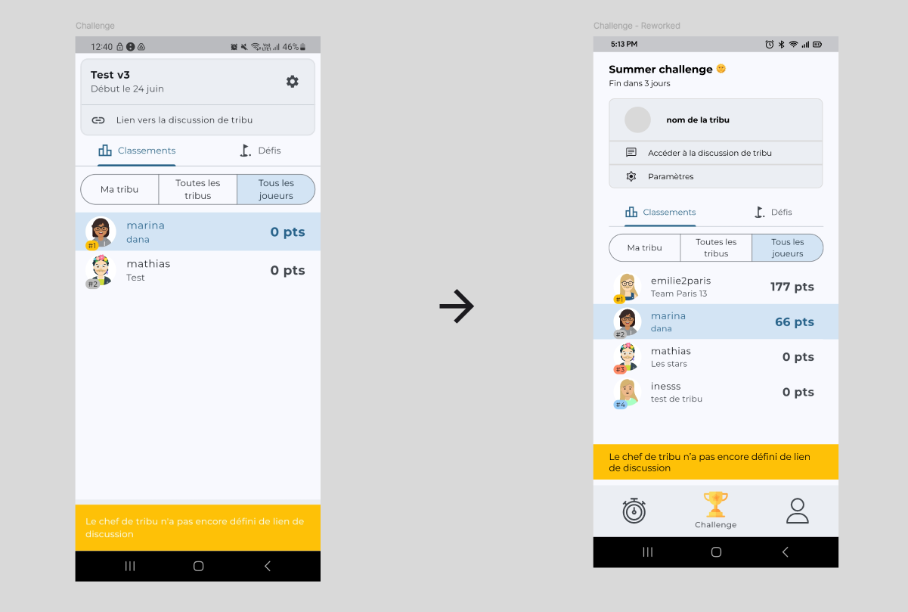
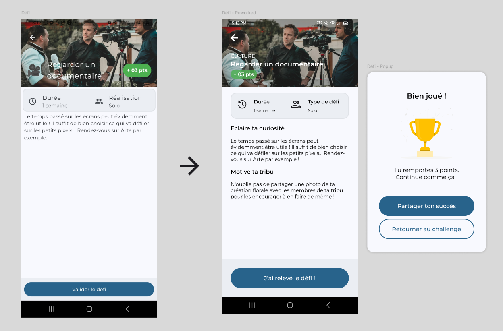

Inouk Challenge
Identification de gains rapides UX/UI pour une application mobile.
Catégorie : Projet associatif
Période : Juin 2025
Format : Mobile
INOUK est une jeune association dont la mission est de transformer le temps passé sur son écran en temps disponible pour se reconnecter à ce qui nous entoure, aux autres et à soi, à travers un challenge en équipe et des défis.
J’ai intégré l’association en juin 2025 en tant que UX/UI Designer bénévole alors que la V3 de l’application était déjà quasiment prête à être déployée et testée auprès d’utilisateurs sur une période de deux semaines. J’ai donc dans un premier temps apporté mon expertise UX/UI afin d’identifier des gains rapides, faciles à mettre en place par le développeur dans un laps de temps réduit.
Ecran "Challenge"
| Catégorie | Problème identifié | Quick win | Impact utilisateur |
|---|---|---|---|
| Microcopie | “🔗 Lien vers la discussion de tribu” : icône lien trop générique, pas de CTA clair. | Renommer le bouton en “💬 Accéder à la discussion de tribu”. | Plus de clarté. |
| Accessibilité | Contraste de la snackbar insuffisant (1:61). | Mettre le texte de la snackbar en #333333 (contraste 7:7). | Meilleure lisibilité. |
| UI / Look & feel | Snackbar chevauchant la barre de navigation, paralysant l'utilisateur dans sa navigation. | Remonter la snackbar au-dessus de la barre de navigation. | L'utilisateur peut poursuivre sa navigation, même si la snackbar est affichée. |
| UI / Look & feel | Marges trop étroites, sentiment étouffant, difficulté à distinguer les différentes sections de l'écran. | Augmenter les margins (24px) et gaps (16px) | Meilleure utilisation du blanc : l’utilisateur distingue mieux les différentes sections de l'écran, l’interface respire davantage. |
Ecran "Défi"
| Catégorie | Problème identifié | Quick win | Impact utilisateur |
|---|---|---|---|
| Microcopie | Bouton “Valider le défi” : Formulation impersonnelle. | Renommer en “J’ai relevé ce défi !”. | Sentiment gratifiant pour l’utilisateur, qui se sent encouragé à poursuivre ses efforts. |
| Microcopie | “Réalisation” : propriété pas claire. | Renommer en "Type de défi". | Plus de clarté. |
| Feedback utilisateur | Aucun feedback utilisateur (textuel et encourageant) après avoir valider un défi. | Ajouter une pop-up “Bien joué ! Tu remportes 3 points.” lorsque l’utilisateur valide un défi. | Sentiment gratifiant pour l’utilisateur, qui se sent encouragé à poursuivre ses efforts. |
| Accessibilité | Contraste du titre sur fond avec image insuffisant, rendant la lecture difficile. | Rajouter un filtre noir en gradient en bas de l’image header + augmenter la graisse du titre. | Meilleure lisibilité. |
| Accessibilité | Le texte et les icônes de la barre de notifications sont en noir sur fond sombre ou en dark mode, rendant leur lecture difficile. | Afficher le texte et les icônes de la barre de notifications en blanc sur fond sombre ou lorsque l’appli est en dark mode. | Meilleure lisibilité. |
| UI / Look & feel | CTA pas suffisamment visible, se confond avec la barre de navigation du téléphone de part le gap réduit et les dimensions similaires entre les deux composants. | Augmenter la taille du CTA et le gap avec la barre de navigation du téléphone. | Le CTA est plus visible, l'utilisateur sait immédiatement où cliquer. |
| UI / Look & feel | Marges trop étroites, sentiment étouffant, difficulté à distinguer les différentes sections de l'écran. | Augmenter les margins (24px) et gaps (16px). | Meilleure utilisation du blanc : l’utilisateur distingue mieux les différentes sections de l'écran, l’interface respire davantage. |
| UI / Look & feel | Le composant "+ 03 pts" peut être pris pour un bouton cliquable de part sa similarité avec le CTA principal de l'écran. | Réduire l'opacité du composant “+ 03 pts”. | L'utilisateur comprend visuellement qu'il ne s'agit pas d'un bouton cliquable. |
| UI / Look & feel | Les informations sur le header sont trop étriquées. | Ordonner les informations dans le header en colonne plutôt qu'en rang (row). | Meilleure lisibilité, permet des titres plus longs. |